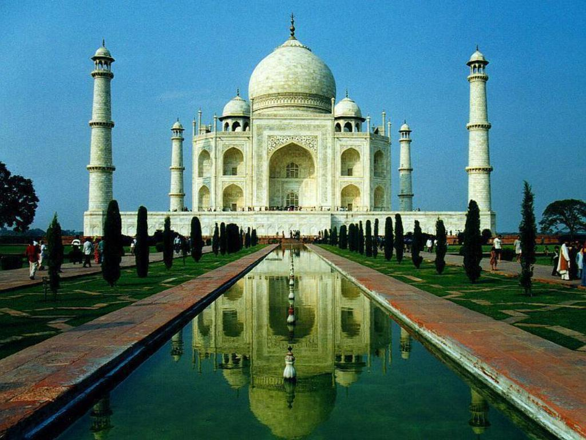
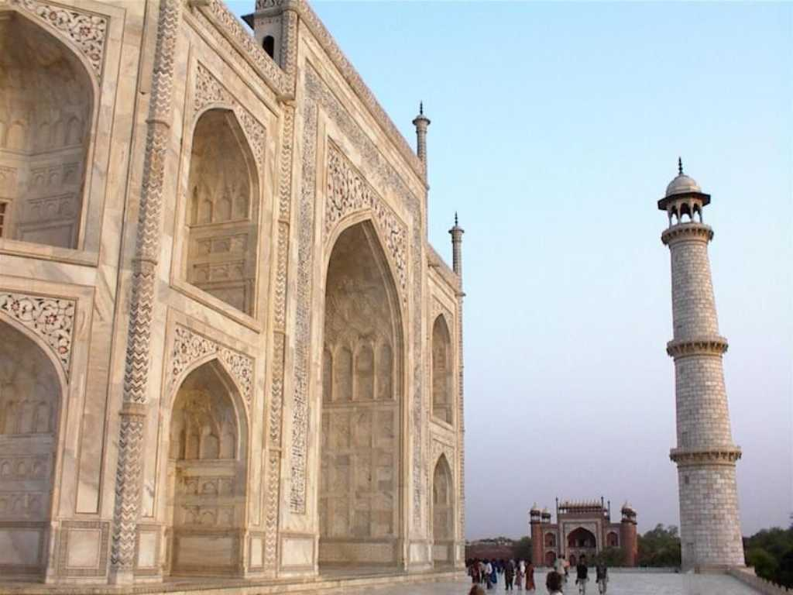
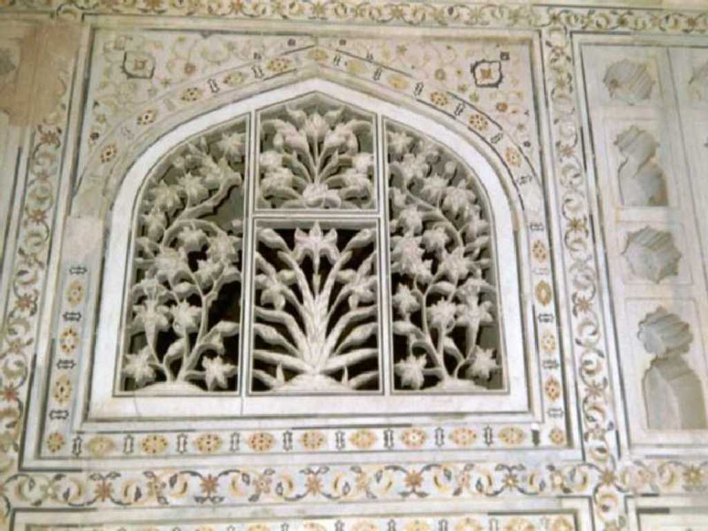
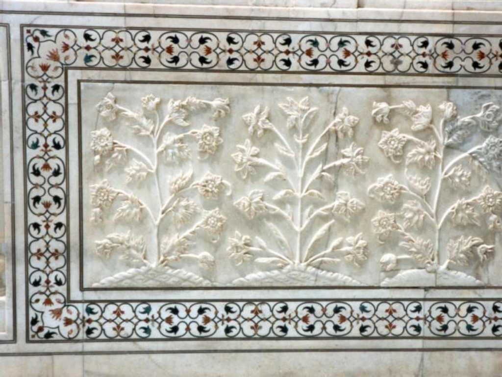
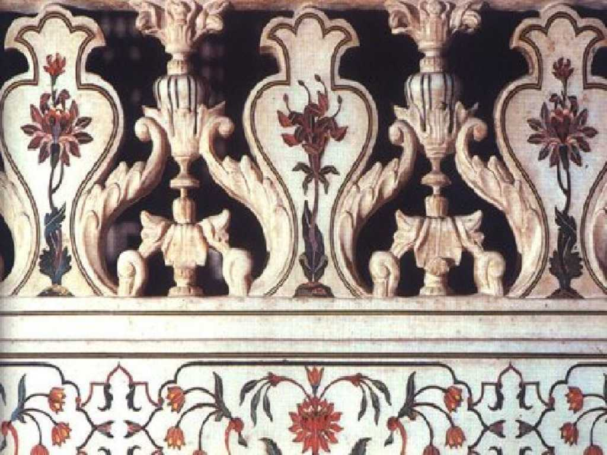
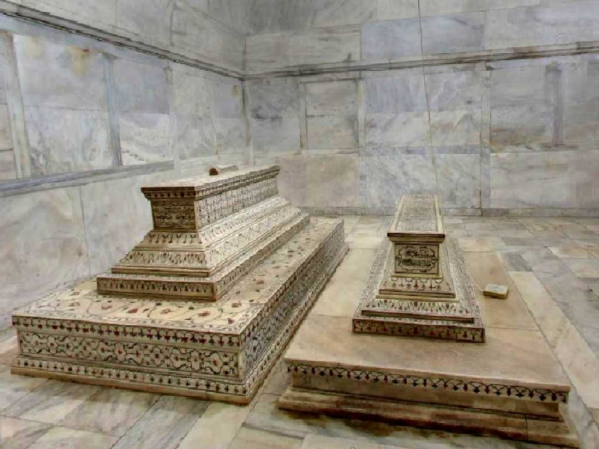
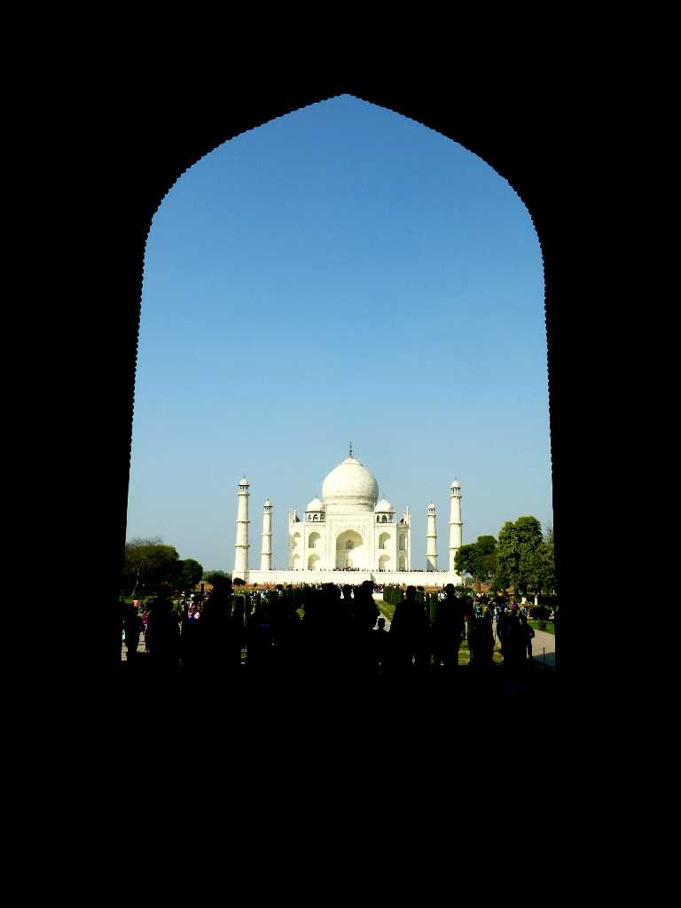
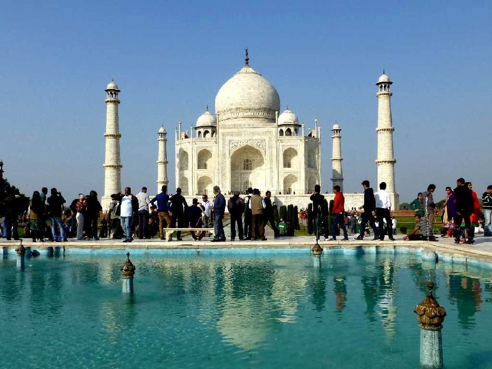
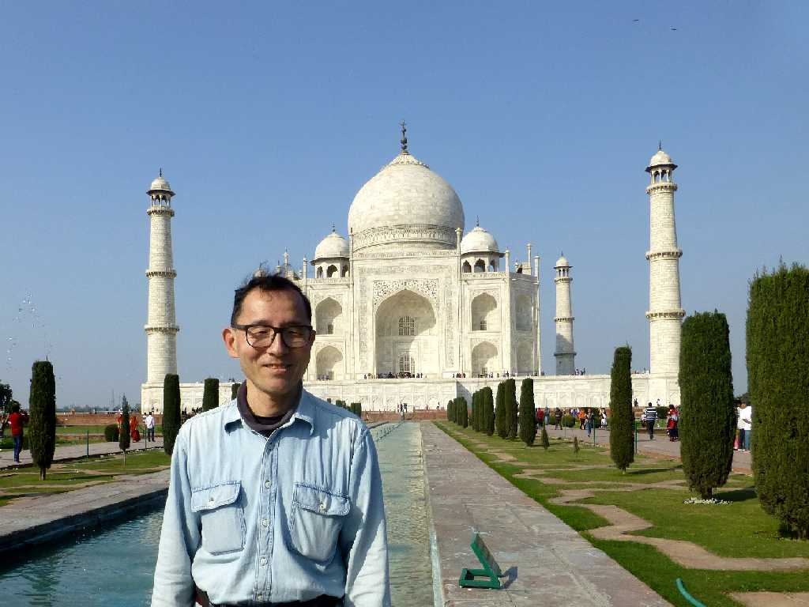

August 1985 Taj Mahal Agra
ムガル帝国の第５代皇帝妃ムムタージマハルの廟として２２年の歳月と天文学的国費を要して１６５４年完成

白大理石の夢と言われ遠くから見ても美しく近くから見ても美しくさらに細かく見ても美しい



高さ６５ｍの白大理石と象眼細工の美しさに興奮して仲間が走り回り日射病で倒れ介抱した

Shah Jahan Mumtaz Mahal Tombs Taj Mahal

Entrance Gate Taj Mahal
約３０年ぶりの再訪問でまた白大理石廟の美しさに感動

Taj Mahal
インドに訪れる観光客の半数が訪れると云う綺麗で壮大な霊廟
January 29 2015 Taj Mahal

 AI解説
AI解説